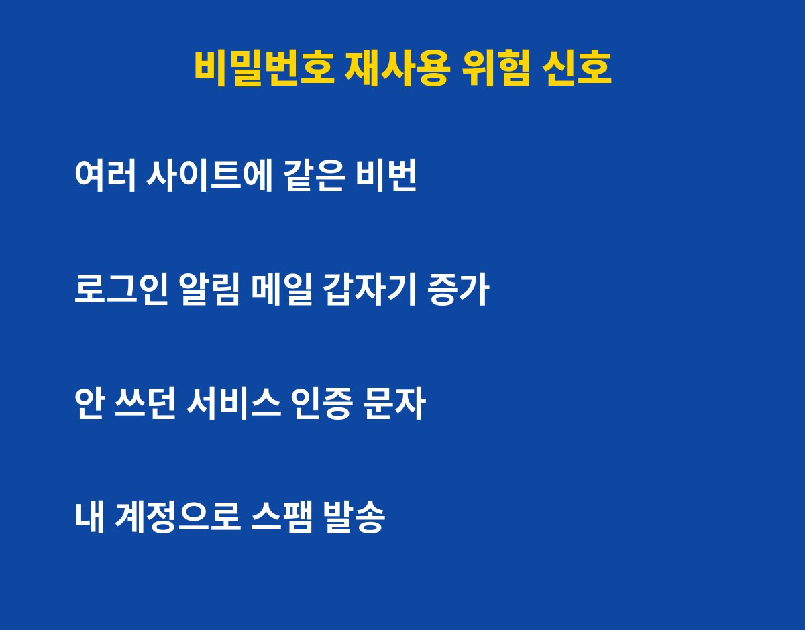

비밀번호 재사용은 사이트 한 곳이 뚫리는 순간 같은 비번을 쓴 다른 계정까지 줄줄이 위험해지는 가장 흔한 보안 구멍이에요. 여러 사이트에 같은 비번을 쓰고 있다면 지금 점검이 필요합니다.
그런데 "나는 복잡하게 만들어서 괜찮다"고 생각한다면 오히려 더 위험할 수 있어요. 이유는 아래에 있어요.
네, 실제로 이런 방식의 공격이 흔해요. 해커는 어떤 사이트에서 유출된 아이디와 비밀번호 목록을 가져다가 다른 사이트에 자동으로 대입해 봅니다. 이걸 흔히 '크리덴셜 스터핑'이라고 불러요.
핵심은 내가 쓰는 사이트가 안전한지가 아니라, 같은 비번을 쓴 사이트 중 가장 허술한 곳이 어디인지예요. 오래전에 가입하고 잊어버린 쇼핑몰이나 커뮤니티가 뚫리면, 그 비번이 메일과 금융 계정으로 그대로 옮겨갑니다.

길고 복잡한 비번이라도 여러 곳에 똑같이 쓰면 소용이 없어요. 유출된 순간 글자가 아무리 복잡해도 그대로 노출되기 때문이에요.
오히려 '기억하기 쉬운 규칙'으로 끝에 숫자만 바꾸는 방식도 위험해요. 하나가 보이면 나머지를 쉽게 짐작할 수 있거든요.
| 습관 | 위험도 | 바꾸는 방법 |
|---|---|---|
| 모든 사이트 같은 비번 | 매우 높음 | 사이트마다 다른 비번 |
| 끝 숫자만 바꾸기 | 높음 | 무작위 긴 문장형 비번 |
| 메일과 금융 같은 비번 | 치명적 | 가장 먼저 분리 |
| 2단계 인증 미사용 | 높음 | 인증 앱·문자 켜기 |
먼저 이상 징후를 살펴보세요. 내가 하지 않은 로그인 알림, 낯선 기기 접속 안내, 쓰지도 않은 서비스의 인증 문자가 늘었다면 의심해 볼 만해요.
크롬이나 사파리 같은 브라우저, 그리고 휴대폰의 비밀번호 관리 기능에는 '유출된 비밀번호 확인' 기능이 있어요. 설정에서 한 번만 열어봐도 재사용 중인 비번과 유출 의심 목록을 보여주니 꼭 확인해 보세요.

순서가 중요해요. 모든 걸 한꺼번에 바꾸려다 지치면 결국 안 하게 됩니다.
첫째, 메일 계정부터 바꾸세요. 다른 사이트의 비번 재설정 메일이 전부 여기로 오기 때문에 메일이 뚫리면 모든 계정이 따라 뚫려요.
둘째, 은행·카드·간편결제 같은 금융 계정과 쇼핑 계정을 바꿔요.
셋째, 나머지는 비밀번호 관리자를 쓰면 편해요. 하나만 기억하면 사이트마다 다른 긴 비번을 자동으로 만들고 채워줍니다.
마지막으로 가능한 모든 곳에 2단계 인증을 켜 두세요. 비번이 새어도 한 번 더 막아줍니다.
새 사이트에 가입할 때는 처음부터 비밀번호 관리자가 만들어 주는 비번을 쓰세요. 가입할 때 습관을 들이면 나중에 한꺼번에 바꿀 일이 줄어요.
더 이상 쓰지 않는 사이트는 탈퇴해 두는 것이 좋아요. 계정이 남아 있으면 그곳이 뚫렸을 때 내 정보도 함께 새어 나갈 수 있어요.
가족이나 지인과 계정을 나눠 쓰고 있다면 서비스의 공유 기능을 쓰고, 비번을 메신저로 주고받는 일은 피하세요.
비밀번호 찾기 질문에 출생지나 반려동물 이름처럼 남이 짐작하기 쉬운 답을 적어 두었다면 함께 바꿔 두세요.
공용 PC나 다른 사람의 기기에서 로그인했다면 꼭 로그아웃하고, 브라우저에 비번 저장을 누르지 않았는지 확인하세요.
회사 계정과 개인 계정의 비번을 같게 쓰는 것도 피해야 해요. 한쪽이 새면 다른 쪽까지 위험해지기 때문이에요.
한 번 바꿨다고 끝이 아니에요. 몇 달에 한 번 브라우저의 비밀번호 점검 화면을 열어 재사용과 유출 경고가 새로 생겼는지 살펴보세요.
문자나 메일로 비번 변경을 재촉하는 링크가 오면 링크를 누르지 말고 직접 앱이나 공식 사이트에 들어가서 확인하는 습관도 중요해요.
비밀번호 관리자의 대표 비번은 다른 어디에도 쓰지 않는 길고 고유한 문장으로 만들어 두세요.
휴대폰 잠금 화면에도 비밀번호나 생체 인증을 걸어 두어야 저장된 계정들이 함께 보호돼요.
2단계 인증의 백업 코드가 있다면 안전한 곳에 따로 보관해 두세요.
이 글이 도움이 됐다면 구독하고 다음 보안 꿀팁도 놓치지 마세요.
기사·공식 발표 기준이며 출시·가격 정보는 바뀔 수 있어요.